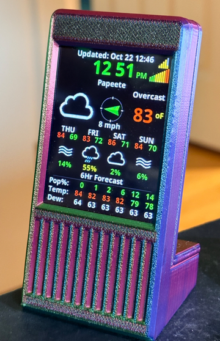

How to use WabbitWeather
What's on the screen, where to tap, and how to set it up. ← Back to the installer
Getting it on your WiFi
- After installing, the screen shows a QR code. Point your phone's camera at it and tap Join.
- A second QR code appears. Scan it to open the setup page.
- Tap Configure WiFi, pick your home WiFi and type its password. It has to be a 2.4 GHz network; the ESP32 can't use 5 GHz.
- WabbitWeather restarts and connects to your WiFi.
No camera? Join the WabbitWeather WiFi network by hand (it has no password) and go to http://192.168.4.1.
The main screen

- Tap the clock for the About screen: the version and the IP address.
- Tap the big weather icon to switch between your two locations.
- Hold the big weather icon for 2 seconds to get fresh weather now. A ring at the top left shows it's working.
- Tap the forecast days to page between days 1–4 and days 5–8.
The settings page
- Open http://wabbitweather.local in a browser on the same WiFi. If that doesn't open, tap the clock on the display and type in the IP address it shows.
- Click the map to set your location. The time zone is found for you.
- Press Update & Save. The display updates right away.